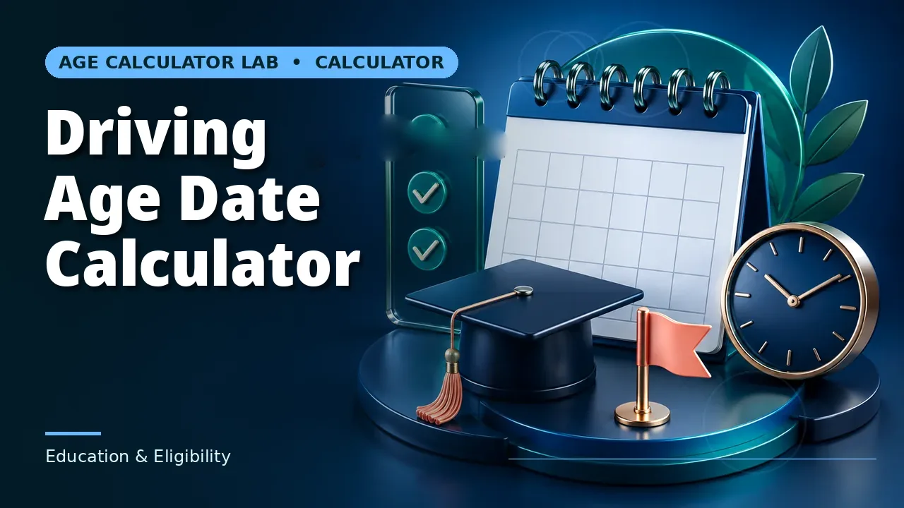

Quick answer
Calculate the date you reach the required age, then work backwards through the other requirements, which usually have their own lead times.
The date is the easy part
Add the required age in calendar years to the date of birth and you have the milestone date. That arithmetic is exact and takes seconds.
What it does not tell you is when you can actually drive, because in most jurisdictions reaching the age is a precondition rather than the qualification. That is the part worth planning.
Use this guide with the right tool: Open the Driving Age Date Calculator for the date a selected driving-age threshold is reached. If the question shifts, compare it with the Age at Event Calculator or the Age on a Date Calculator.
Graduated licensing
Most systems now stage the process: a learner permit at one age, a supervised period of a set length, a minimum number of supervised hours, a test, then a probationary licence with restrictions on passengers, night driving or engine size, and finally a full licence.
Each stage has its own age and its own minimum duration, and the durations run consecutively. That means the date of a full licence can be a year or more after the date of the first eligible birthday, and the schedule is determined by when you start rather than when you turn the age.
Working backwards
If a particular date matters — a job that requires driving, a move, a course — start from that date and work back through the stages. A supervised period of twelve months means the learner permit must be obtained at least twelve months earlier, which may be before the relevant birthday depending on the permit age.
This is where the milestone date becomes genuinely useful: not as an answer, but as one fixed point in a backwards-planned schedule.
Rules vary and change
Minimum ages, supervised-hour requirements and restriction periods differ between countries and between states or provinces within them, and they change. Medical requirements, eyesight standards and identity documentation add further conditions.
The licensing authority's current published requirements are the only reliable source. A calculator gives you a date; it has no knowledge of any of this.
Worked example
Born on 18 November 2010, someone turns 16 on 18 November 2026, yet twelve months of supervised practice pushes the earliest full licence to late 2027. Work forward from your birth date through each stage your licensing system requires.
A boundary case: the leap-day birthday
Take someone born on 29 February 2012, in a system with a learner permit at 16 and twelve months of supervised practice before the test. Their sixteenth birthday is 29 February 2028. Because 2028 is a leap year, that date exists exactly — no clamping, no observance question, and the permit can be applied for on the day itself. Leap-day births are usually the awkward case in date arithmetic; at this stage they are the clean one.
The awkwardness arrives a year later. Adding twelve calendar months to 29 February 2028 lands on 28 February 2029, because 2029 has no 29 February and the calendar clamps to the last day of the month. So the supervised year completes on 28 February 2029 — which is also, by the same clamping, the date of their seventeenth birthday. One date discharges two conditions. Under an authority that observes a leap-day birthday on 1 March instead, both dates shift by a day, and a test booked for 28 February on the clamped reading would be a day early on theirs. Which observance applies is a rule question for the licensing authority, not an arithmetic question, and it is worth settling before anything is booked.
The same dates show the backwards method with a fixed target. Suppose the full licence is needed by 1 September 2029 — for a job starting that month, say. Working back: the test must be passed by then, the twelve supervised months must complete by then, so the permit must be in hand by 1 September 2028, which means the sixteenth birthday must fall on or before 1 September 2028, which means a birth date on or before 1 September 2012. The leap-day driver, born 29 February 2012, clears that with six months to spare. Their binding constraint was never the birthday; it was the supervised year, and the birthday only becomes the constraint for someone born in the autumn of 2012, whose permit date pushes the whole chain past the target.
A different staging pattern shows the same structure with different numbers. In a system with a permit at 17 and a 24-month probationary period before a full licence, someone born 3 May 2010 can hold a permit from 3 May 2027, and the earliest full licence arrives on 3 May 2029, their nineteenth birthday — the probationary period and the age condition discharging on the same date, which is a coincidence of these particular numbers, not a rule. Work backwards from a course or job needing the full licence by 1 September 2029 and the permit must be held by 1 September 2027, so the seventeenth birthday must fall on or before that date. Someone born 15 September 2010 misses by a fortnight: they turn 17 on 15 September 2027, fourteen days too late, and no test centre, fee or instructor can recover the fourteen days, because the constraint is a birth date. Fourteen days is also roughly the scale of a test-booking wait in a busy period, which sits outside the age arithmetic entirely — the calculator's dates are eligibility dates, and the date you actually drive is the later of eligibility and availability.
Reading the Driving Age Date Calculator for a staged system: run it once per threshold, not once overall — once at the permit age and once at the full-licence age. The gap between the two output dates is the minimum staging time the ages alone impose. If your authority's supervised period is longer than that gap, the period governs and the second date the calculator gives is earlier than the real earliest date; if the gap is longer, the ages govern. Comparing the two figures tells you which constraint you are actually planning around.
Common mistakes to avoid
- Treating the birthday as the licence date. In graduated systems it is the start of a process that takes months or years.
- Assuming another region's rules. Ages and requirements vary by state and country and change over time.
- Planning forwards from the birthday. Work backwards from the date you need to be driving, through each stage's lead time.
Use the right calculator
The Driving Age Date Calculator gives when a driving-age threshold is reached, the Age at Event Calculator gives age on an event date, and the Age on a Date Calculator gives age on any date.



Frequently asked questions
What is graduated licensing?
A staged system with a learner permit, a supervised period, a test and a restricted licence before a full one. Most jurisdictions now use some version.
Does the calculator tell me when I can drive?
No. It gives the date you reach a chosen age. Everything else comes from the licensing authority.
Can the supervised period start before the birthday?
Sometimes, if the permit age is lower than the licence age. Check the specific requirements.